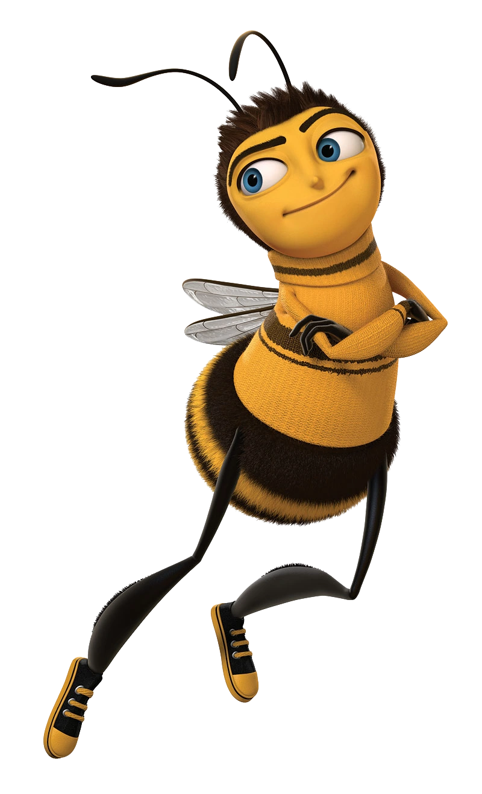

There once was a bee named Barry. Barry was an ordinary bee in an ordinary hive in the middle of a field in central park New York. Today was the day that he graduated from bee school with a great report card; all B’s. He got dressed in yellow and black (not black and yellow), put on some honey deodorant and met up with his best friend Adam. Together they flew to the graduation ceremony which was quickly over and turned into a tour of the hive and the various jobs they might choose from. This was the moment Barry realized that he would be forced to pick a job that he would have forever. This was something he could not agree to.
One fateful day, Barry witnessed a group of bees returning to the hive. These were no ordinary bees however; they were pollen jocks, some of the bravest bees in the hive. Their job was to venture out into the world and collect pollen for the colony. Determined to see the outside world, and to escape a life of monotony, Barry decided to accompany the pollen jocks on a dangerous scouting mission. Everything seemed to be going according to plan, until Barry got himself stuck to a tennis ball.
The tennis ball went flying at mach speed towards an oncoming tennis racket. Barry saw his life flash before his eyes, and it was really sad. Before Barry's tiny bee brain could even process his existential crisis, his body was smashed to bits between the tennis ball and tennis racket. Miraculously, Barry did survive, but he awoke in the bee hospital with amnesia for bees. Am-bee-sia!
Waking up and not remembering anything was terrifying. Barry looked all around the hospital room and all he could see was the IV pumping honey into him. Across the room he saw someone that looked like him. He said his name was Adam Flyman and that we were best friends. “I’m going to avenge you Barry,” he said as he flew out the window headed back to the tennis court. Barry watched him fly away, even more confused than he was before.
